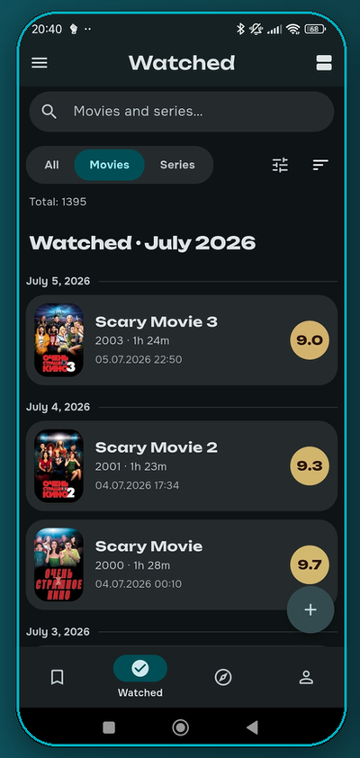
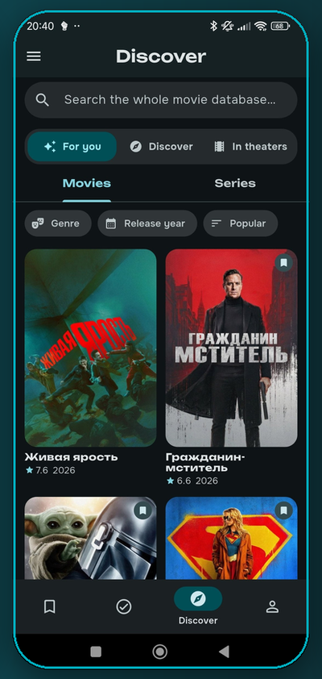
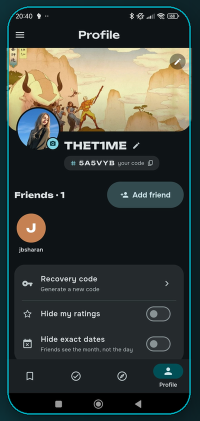
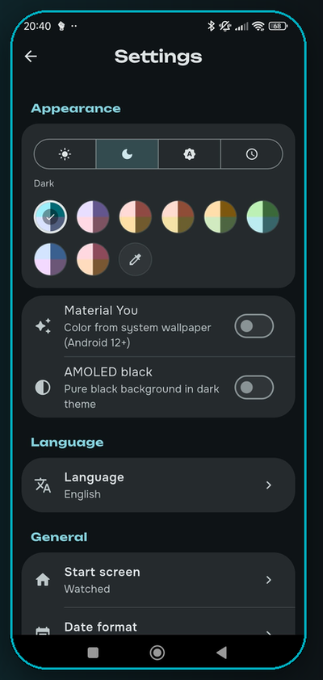

Твой трекер фильмов и сериалов
Отмечай просмотренное, открывай новое и делись с друзьями — в выразительном дизайне Material 3. Локально, без рекламы, с открытым кодом.
Бесплатно · Без рекламы · GPL-3.0 · v0.15.4
Total: 1395
Watched · July 2026
Scary Movie 3
2003 · 1h 24m
Scary Movie 2
2001 · 1h 23m
Scary Movie
2000 · 1h 28m
Данные из открытых источников
Возможности
Дневник, открытия, статистика и социальный слой. Быстро, приватно и красиво.
Отмечай фильмы и серии, ставь оценки по настроению, смотри всё по месяцам и веди статистику.
Персональные подборки «Для тебя», новинки в кино, поиск по всей базе фильмов и сериалов.
Добавляй друзей, смотрите вместе, делись профилем с баннером и кодом, получай рекомендации.
Двусторонний синк с Trakt, где Kadr — источник истины. Резервные копии по WebDAV и P2P.
Полноценный интерфейс для телевизора с навигацией пультом (D-pad). Твоя коллекция — на большом экране.
Данные живут на устройстве. Local-first, без рекламы и трекеров, открытый исходный код GPL-3.0.
Оформление
Выбери цвет темы — и вся палитра пересоберётся, точь-в-точь как в приложении. Восемь готовых тем, пипетка для своего оттенка, светлая и тёмная, AMOLED. Попробуй прямо здесь 👇
Цвет темы
Оформление
Material You
Для тебя
Интерфейс




Вместе
Добавляй друзей по коду, следи за их просмотрами и желаниями, отмечай «смотрели вместе» — просмотр засчитается обоим.
Друзья по коду
Уникальный код профиля — делись и добавляй в одно касание.
Смотрели вместе
Один просмотр — засчитывается тебе и другу, с уведомлением.
Профиль с баннером
Свой баннер, аватар и приватность: скрывай оценки и точные даты.
Языки
Приложение и этот сайт переведены полностью. Переключи язык в шапке 👆
Установка
Только GitHub Releases и Obtainium — с автообновлением. Без Google Play, без слежки.
Android · v0.15.4 · GPL-3.0 · F-Droid и RuStore — в планах